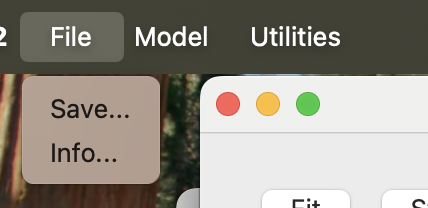
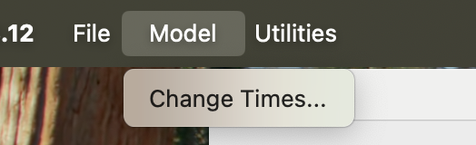
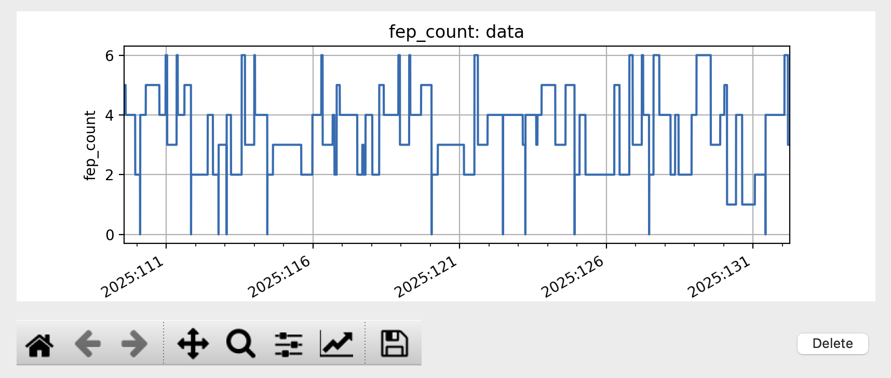
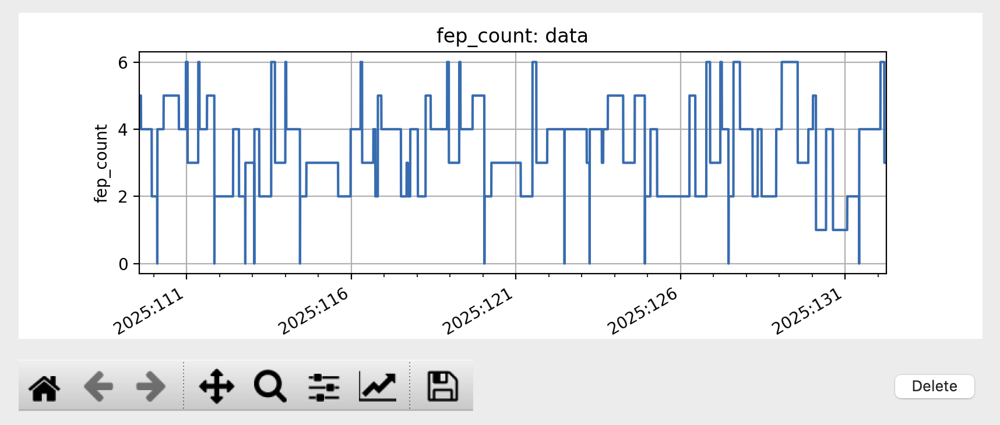
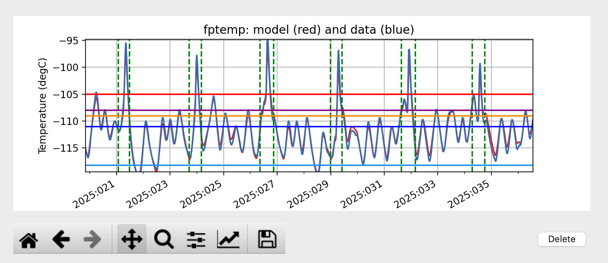
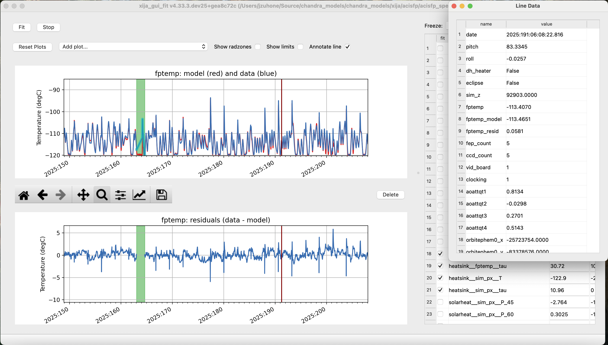
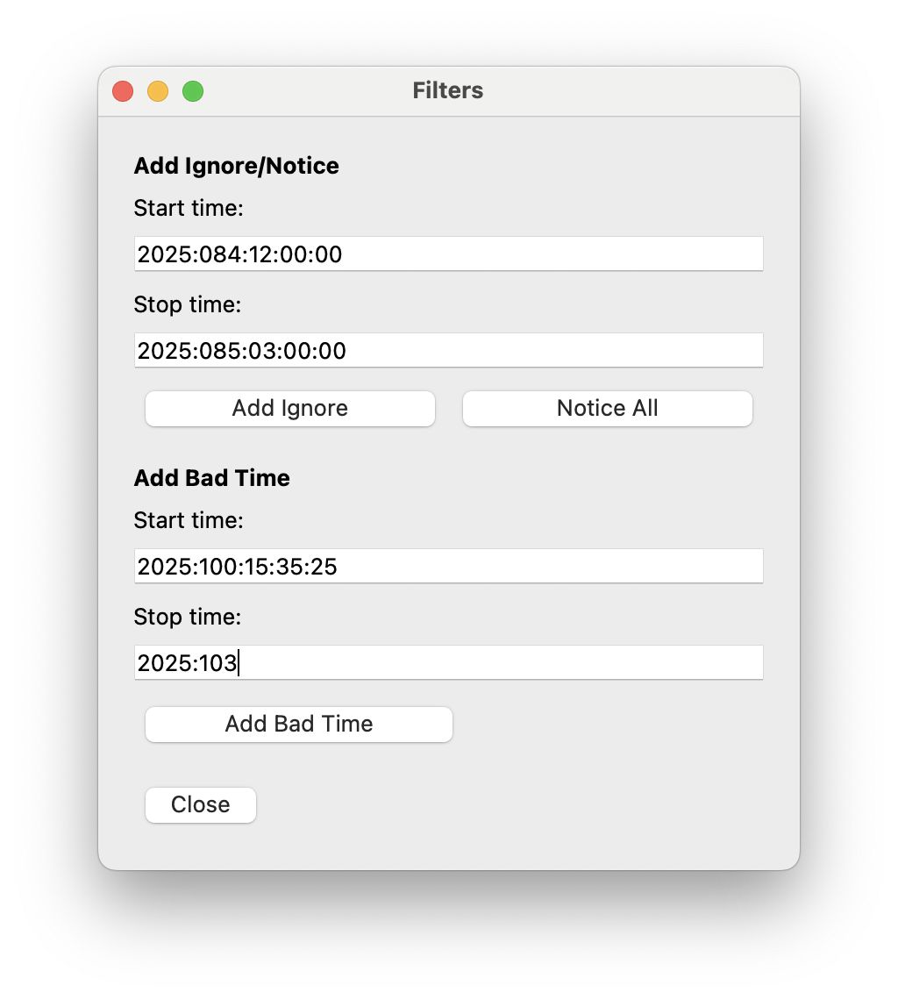

Fitting a model using xija_gui_fit¶
So far we have been manually working with a Xija model to understand a bit of
what is going on underneath and know how to make performance predictions.
However, the key task of actually calibrating the model parameters is done with
the xija_gui_fit application.
xija_gui_fit Overview¶
The image below shows an example of fitting the ACIS FP model with
xija_gui_fit.

Live demo using a Ska window:
% cd $XIJA/examples/pcm
% xija_gui_fit pcm.json --stop 2012:095 --days 30
Command line options¶
The xija_gui_fit tool supports the following command line options:
% xija_gui_fit --help
usage: xija_gui_fit [-h] [--model-version MODEL_VERSION] [--days DAYS]
[--stop STOP] [--maxiter MAXITER]
[--fit-method FIT_METHOD] [--inherit-from INHERIT_FROM]
[--set-data SET_DATA_EXPRS] [--quiet]
filename
positional arguments:
filename Model or file name: '*.json' is a local spec file,
otherwise this is a model name (e.g.
'acisfp_spec_matlab') that points to a like-named JSON
spec file in the Ska chandra_models repo.
options:
-h, --help show this help message and exit
--model-version MODEL_VERSION
Model version for model from chandra_models
--days DAYS Number of days in fit interval (default=90)
--stop STOP Stop time of fit interval (default=model values)
--maxiter MAXITER Maximum number of fit iterations (default=1000)
--fit-method FIT_METHOD
Sherpa fit method (simplex|moncar|levmar)
--inherit-from INHERIT_FROM
Inherit par values from model spec file
--set-data SET_DATA_EXPRS
Set data value as '<comp_name>=<value>'
Most of the time you should use the --days and --stop options. Note that
if you have saved a model specification and then restart xija_gui_fit, the
most recently specified values will be used by default.
--fit-methodThe default fit method is
simplexwhich is a good compromise between speed and completeness. For the fastest fitting uselevmar. If already have somewhat decent parameters and want to try to refine for the very best fit then selectmoncar. However, do not choose this option with more than about 10 or 15 free parameters as it can take a long time. Typically withmoncaryou need to start the fitting and then do something else for a while (many hours or more).--inherit-fromThis provides a way to construct a model which is similar to an existing model but has some differences. All the model parameters which are exactly the same will be taking from the inherited model specification.
Assuming you have created a model specification file my_model_spec.json
then a typical calling sequence is:
% xija_gui_fit --stop 2012:002 --days 180 my_model_spec.json
Menu Bar Options¶
The top-level menu bar has a number of options. The Utilities Menu will be discussed below.
File Menu¶
{kind=link}
Save…¶
Opens a dialog to save the current model specification file.
Info…¶
The “Info…” option allows one to get some quick information about the model which is being fit, which includes the full path to the filename, the MD5 sum of the model JSON file, the start time and the stop time of the model run, the timestep, the chosen evolution method, the limits for the model, and the order of the method (RK2 or RK4). If the MD5 of the current model is different from the one on disk (due to a parameter change, etc.) it will show up in red.

Model Menu¶
{kind=link}
Change Times…¶
Opens a dialog to change the start and stop times of the model run. This can be useful if you want to expand the model evalulation to a longer time range (e.g., in order to include more data for fitting, or better constrain the long-term pitch parameters).

There are two ways to update the new times. You can either enter a new start and/or stop time in the boxes and then press the “Change” button, or you can select a new stop time and then set the number of days to go back to to calculate the new start time. Regardless of which method you use, the values in the boxes will be updated to reflect the new values.
If you enter an invalid time (e.g. a stop time before or equal to the start time, or an invalid date string) or an invalid number of days (e.g. negative, zero, or not a number), then the values will turn red until a valid value is entered. If you enter bad values and then press “Change”, a dialog will pop up to remind you that the values are bad, with the message depending on the reason.
Manipulating Parameters¶
One of the key features of xija_gui_fit is the ability to visualize and
manipulate the dozens of parameters in a typical Xija model.
The parameters are on the right side panel. Each one has a checkbox that
indicates whether it will be fit (checked) or not (unchecked). The value is
shown, then the minimum allowed fit value, a slider bar to select the value,
and then the maximum allowed fit value. As you change the slider the model
will be recalculated and the plots updated. It helps to make the xija_gui_fit
window as wide as possible to make the sliders longer.
If you want to change the min or max values just type in the box and then hit enter (if you don’t hit enter, the new value won’t apply).
You can freeze or thaw many parameters at once using the “glob” syntax in the “Freeze:” or “Thaw:” entry boxes at the top of the fit window. Examples:
* # freeze/thaw all parameters
solarheat* # freeze/thaw all the solarheat params
solarheat*_dP_* # freeze/thaw the long-term solarheat variation params
Plots¶
Many model components have built-in plots that can be added to the fit window via the “Add plots…” drop down menu. The available plot names correspond to the model component followed by a description of the plot. Plots can be deleted by pressing the corresponding “Delete” button.
For the particular node that is being modeled, there will be a plot showing the data (blue) and model (red) together vs time. One handy feature is that the time-based plots are always linked in the time axis so that if you zoom in or pan on one then all plots zoom or pan accordingly. When you want to go back to the full view, you can use the “Reset Plots” button. Plots will update in real-time if parameters are changed, either by moving the sliders, setting values directly, or by fitting.
Plot Types¶
Model and Data vs. Time¶
The main plot that you will want to see is the model’s main data__time plot,
which shows the data and model vs. time. This is the key plot to see how well the
model is fitting the data. In the plot dropdown menu, select <node> data__time
where <node> is the name of the node being modeled (e.g. fptemp):
Model Residuals vs. Time¶
Another useful plot is the <node> resid__time plot, which shows the data-model
residuals vs. time. This is useful for seeing trends in the residuals which may be
related to certain spacecraft conditions:

Model Residuals vs. Data¶
One may want to see the residuals plotted against the data temperature to see if
there are any trends. This is available as the <node> resid__data plot
which shows the residuals vs. the data temperature:
Model Inputs vs. Time¶
Model inputs, such as other MSIDs or commanded states, can also be plotted vs. time.
Some examples are pitch and fep_count:
 

Solar Heating Power vs. Pitch¶
Each node in the model which has a solar heating component has a corresponding plot
of the solar heating power vs. pitch. For most models, this is the
solarheat__<node> solar_heat__pitch plot, which shows the amount of solar heating
power being applied to the node as a function of pitch angle:

The blue line “P” shows the nominal solar heating power vs. pitch, while the purple line “P + dP” shows the added effect of the long-term variation in the solar heating power.
Some models (ACIS FP, ACIS PSMC, HRC CEA) have a solar heating curve for multiple
SIM-Z positions. This plot has a name like
hrc_*_acis_*_simz_solarheat__<node> solar_heat__pitch and looks like this:

ACIS Power States¶
ACIS thermal models (and the HRC CEA model) have a plot showing the ACIS power
states, which depend on CCD count, FEP count, and whether the detector is taking
data (“clocking”). This plot is called dpa_power power__state and looks like
this:

The x-axis shows FEP or CCD count, depending on the model. The different colors of the points indicate whether the detector is clocking (blue), not (orange), or if the state is unknown (green).
Plot Annotations¶
There are also a few types of plot annotations that may be useful.
Annotate Limits and Radzones¶
If the thermal limits are included in the JSON model specification file, they can
be plotted on the data__time and resid__data plots for the modeled
temperature. To enable this, toggle the “Show limits” checkbox. Different colors
are used for different limits.
It may also be useful to know when the radzones begin and end. Toggling the “Show radzones” checkbox puts dashed green lines on the time plots indicating the times of the radzones.
Annotate Line Option¶
Clicking the “Annotate line” checkbox adds a brown vertical line to the time plots which can be dragged around from any plot and its motion will by synchronized between them. It also pops up a “Line Data” window which shows the values of all of the model inputs and outputs at the time marked by the brown line.
Fit Strategy¶
Fitting Xija models is a bit of an art and will it take some time to develop skill here. A few rules of thumb and tips:
Start with all long-term variations frozen. You want to begin with a single time span that is about a year long and ends near the present. The more parameters in the model that get fit, the more data you need. Start by trying to get the model in the right ballpark. Typically this means:
Freeze? Parameters Initial values ------- ------------------ ---------------------- freeze solarheat_*_dP_* 0 freeze solarheat_*_tau 365 freeze solarheat_*_ampl 0 freeze heatsink_T ~10 deg below typical thaw solarheat_*_P_* 0 thaw heatsink_tau Typical time scale thaw coupling_* 30
Almost always have the
solarheat_*_biasterms frozen at 0. This parameter is degenerate with thesolarheat_*_P_*values and is used for certain diagnostics.Once you have a model that fits reasonably well over the one year period, freeze all parameters except for
solarheat_*_dP_*andsolarheat_*_amplparameters. Fit over a 2-3 year time period which ends at the present time. You can do this by either saving the model spec file and then restartingxija_gui_fitwith the new--daysand--stopvalues, or by using the “Change Times…” option in the Model Menu.Next, you might want to refine the
solarheat_*_P_*parameters at this point by thawing those ones and freezing the long-term parameters and fitting. Remember that if the time span is not long enough, thenPanddPare degenerate and the fit may not converge.It can be useful to include long dwells at the worst-case pitch for your model in the fitting to have some high-temperature data in the fit dataset.
Remember to save your model fit when you get a good fit. It is not saved by default and there is currently no warning to this effect. Often there is a progression of model fits and it may be useful to incrementally number the models, e.g.
pcm03t_1.json,pcm03t_2.json, etc. By convention the final “flight” models that get configured are called<modelname>_model_spec.json, so avoid using this name during development.Saving also saves the state of plots and your parameters.
Utilities Menu¶

A number of other optional features are included with xija_gui_fit under the
Utilities Menu, which may help with interpreting model fits and other analyses.
Histogram…¶
The “Histogram…” menu item brings up a window which shows two histograms of the model performance, similar to a dashboard plot. The left histogram shows the distribution of the residuals (data - model) versus the data temperature. Lines are drawn for the 1%, 50%, and 99% quantiles. The right histogram shows the binned distribution of the residuals, with lines drawn for the 1%, 50%, and 99% quantiles.

Though the histogram window can be open while fitting, it will not update automatically. To update the histograms, press the “Redraw” button.
Note that there are a number of options that can be set to modify the histograms. First, there is the standard Matplotlib toolbox for zooming, panning, saving, etc. Second, there are two dialog boxes that can be used to set the limits of the residuals. Finally, there are three checkboxes. The “Mask radzones” and “Mask FMT1” checkboxes will exclude data during radzones and FMT1 periods, respectively. In this example, we mask out data from the radzones–note how different the histograms look from the unmasked version above:

Note
These options may only be useful for certain models, such as the ACIS FP model.
The “Show limits” checkbox will overplot the thermal limits on the left histogram:

Filters…¶
Sometimes it may be desirable to exclude certain telemetry data from the fit if it is known to be bad or one just wants to experiment. This functionality is available under the “Filters…” menu item, which brings up a window that presents two options for filtering data on time ranges.
The first option is to filter out data within a given time intervals for the
the current session only. To do this, enter a start and stop time under the
“Add Ignore/Notice” section of the “Filters” window and then press the
“Add Ignore” button. The time interval will be added to the intervals that
are ignored for the current session, and will be shown in red on the plots.
If you want to remove all ignored intervals, press the “Notice All” button.
Once you exit the xija_gui_fit application, these ignored intervals
will be forgotten.
The second option is to permanently filter out data by adding time intervals known as “bad times” to the model specification file. Historically, these have been added by hand, but now this can also be done in the “Filters” window, by entering a start and stop time under the “Add Bad Time” section and then pressing the “Add Bad Time” button. The time interval will be added to the list of bad times in the model specification file, and will be shown in green on the plots.
{kind=link}

If you enter an invalid start or stop date, then the bad value(s) will turn red until a valid value is entered. If you enter bad values for the intervals and then press either of the buttons to add them, a dialog will pop up to This will also occur if you set the stop time to be before or equal to the start time, or if you enter ignore intervals that are outside of the current model time range. However, you can add bad time intervals that are outside of the current model time range.
Write Table…¶
It may be useful to take a number of model/data outputs associated with the fitting procedure and output to an ASCII table in the AstroPy ECSV format The “Write Table…” menu item brings up a window which allows one to select from the different quantities which are inputs to the model and its outputs, select a time window within which to output data, and then write the quantities to the table.

If you enter an invalid start or stop date, then the bad value(s) will turn red until a valid value is entered. If you enter bad values and then press “Write Table”, a dialog will pop up to remind you that the value(s) are bad, with the message depending on the reason. This will also occur if you set the stop time to be before or equal to the start time.
Fit Statistic…¶
The “Fit Statistic…” menu item brings up a window which shows the change in the fit statistic vs. the number of fit iterations. This plot is not renewed in real-time, it must be refreshed by pressing the “Redraw” button, or it will be refreshed if the window is closed and then reopened. The plot has no data until a fit is performed. It will retain the history of the fit statistic from previous fits during the current session, but not if the times are changed or if the application is exited.